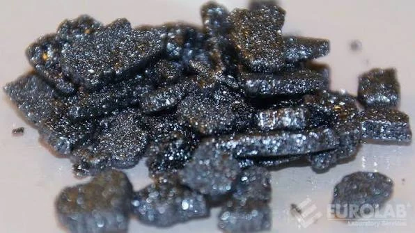
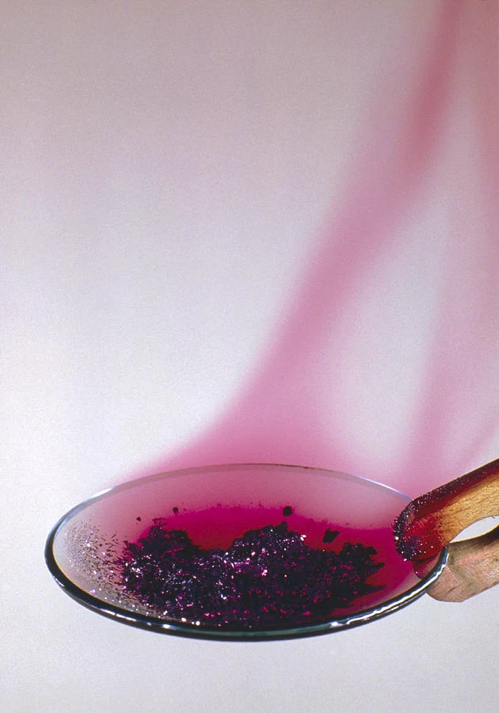

UT 1.1 · Actividad individual · 30 minutos
Las transformaciones del yodo
Primera parte · Observar y predecir
1. Observar y construir una explicación
El yodo es una sustancia que, a temperatura ambiente, se presenta en forma de cristales de color gris oscuro, como los de la foto A.
En un laboratorio, se quiere comprender qué les ocurre a estos cristales cuando se calientan suavemente. Se vuelven progresivamente más pequeños y aparece un gas violeta, como en la foto B. En las condiciones de este experimento, el yodo pasa directamente del estado sólido al estado gaseoso.
Tu misión es explicar esta transformación con el modelo de partículas y después predecir qué podría ocurrir si este gas entra en contacto con una pared fría.
A. Entre las fotos, traza una flecha. Nombra el cambio de estado e indica « calentamiento » o « enfriamiento ».


B. Observar o interpretar. Marca en azul lo que se observa y en rojo lo que se interpreta.
Elige un color y después toca las palabras que quieras marcar.
2. Hacer una predicción
Después, se introduce el gas en un vaso frío. ¿Qué predices? Explica tu respuesta con las partículas.
La siguiente parte espera tu predicción
Escribe tu predicción antes de continuar. Tu docente te dará el código para acceder a los ejercicios 3 y 4.
Respuestas guardadas en este navegador.